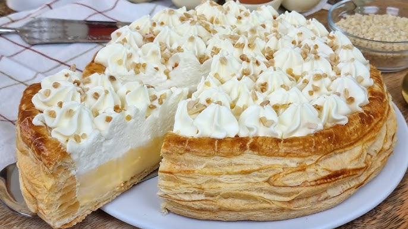
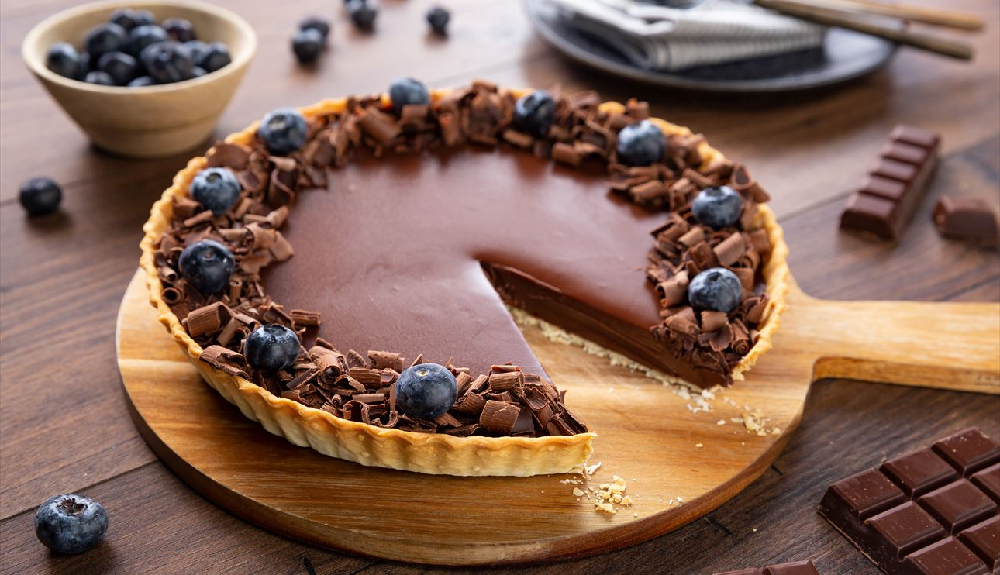

postres


crema batidas
La crema batida es un delicado producto lácteo que se obtiene al batir crema hasta que incorpora aire,
formando picos suaves. A menudo endulzada con azúcar y a veces aromatizada con vainilla,
se utiliza como cobertura para pasteles, helados o frutas frescas.
Su textura ligera aporta un contraste agradable a los postres más densos.
postres


Pasteles de frutas
Los pasteles de frutas son postres visualmente atractivos que suelen consistir en una base suave cubierta por crema pastelera
y decorados con frutas frescas como fresas, kiwis o arándanos.
Son frescos y ligeros, ideales para aquellos que buscan algo dulce pero no demasiado pesado.
postres


TPastelitos, de un bocado
Los pastelitos son pequeños dulces elaborados para ser consumidos en un solo bocado.
Pueden incluir capas variadas como bizcochos finos rellenos de crema o frutas,
cubiertos con glaseado o chocolate. Su presentación suele ser colorida y atractiva,
perfectos para eventos especiales o meriendas elegantes.
Postres


Tartas
Las tartas son versátiles tanto en versiones dulces como saladas.
Las tartas dulces pueden incluir rellenos variados como frutas frescas o chocolate,
mientras que las saladas pueden estar rellenas de verduras o carnes.
La masa puede ser crujiente o suave según el tipo específico de tarta que se prepare.